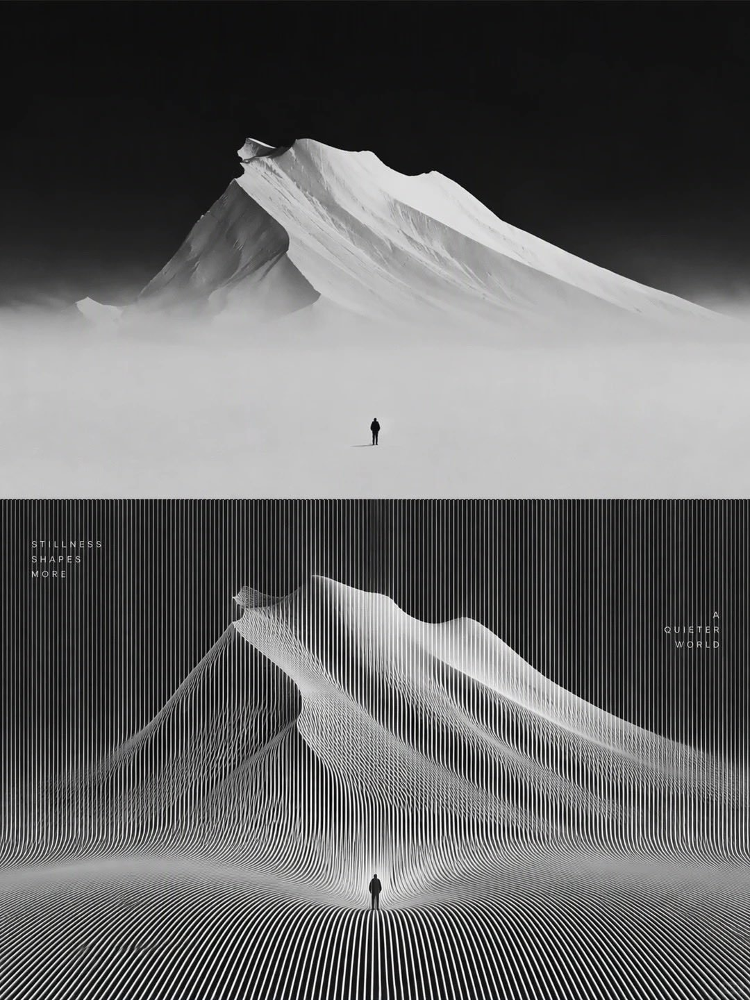

Minimal Landscape Poster
A snowy mountain lake photo above its redrawn version as a line-art poster in pastel pink and lavender with small type.
| Creator | Taaruk @Taaruk_ |
|---|---|
| Platform | X |
| Model | GPT Image 2 |
| Likes | 88 |
| Posted | 2026-10-17 |
| Visual style | Commercial / ad look |
| Regional vibe | No specific region |
| Genre | Nature / landscape |
| Mood | Heartwarming |
Prompt · from the post
Create a stunning minimalist landscape art series inspired by majestic snow-covered mountains, serene reflections, and the peaceful beauty of nature. The first composition features towering snowy peaks beneath a soft pastel pink and lavender sky, a calm reflective lake, and dark evergreen forests, captured in cinematic photography. The second composition transforms the mountain landscape into an abstract 3D topographic wireframe sculpture, using intricate flowing contour lines, monochrome black-and-white tones, dramatic fog, and a tiny human silhouette emphasizing scale and solitude. Combine photorealism with conceptual digital art, elegant editorial typography, subtle horizontal line patterns, clean geometric layouts, atmospheric lighting, fine details, and a sophisticated contemporary art-gallery aesthetic. Vertical poster format, ultra-high resolution, breathtaking composition.